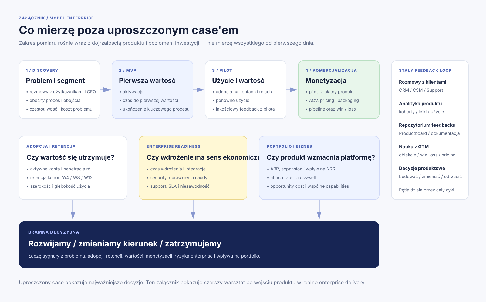

Patrzę na pięć obecnych modułów: etap rozwoju, przychód, trend, adopcję i koszt dalszej inwestycji. Nie robię pełnego portfolio review — szukam tylko sygnałów, które mogłyby zmienić decyzję o dokładaniu kolejnego produktu.
Zadanie rekrutacyjne • jawne założenia • uproszczony model
Jak wybrałbym jeden z trzech kierunków i doprowadził go do decyzji: rozwijamy, zmieniamy czy zatrzymujemy?
Na potrzeby zadania celowo upraszczam dane i liczbę metryk. Chcę pokazać przede wszystkim sposób myślenia, kolejność decyzji i to, jak zwiększam poziom inwestycji razem z poziomem pewności.
Założenia do briefu
Co przyjmuję, żeby móc podjąć decyzję
Firmaglobalny B2B SaaS finansowy
Decydent budżetowyCFO
Użytkownicyzespoły finansowe
Odpowiedzialnośćprodukt + wynik biznesowy + udział w pierwszym GTM
PrototypProduct Builder buduje go sam lub razem z Product Designerem / UX/UI i innymi osobami potrzebnymi do testu
AIwykorzystuję AI do researchu, prototypowania, kodowania i przyspieszania iteracji
WalutaUSD
Ograniczenie z zadaniaz trzech nowych kierunków możemy uruchomić tylko jeden
Uproszczenie na potrzeby zadania: w realnym enterprise SaaS patrzyłbym na szerszy zestaw danych: ekonomię produktu, adopcję na poziomie kont i ról, retencję, monetyzację, koszty wdrożenia, obciążenie supportu, ryzyka techniczne, bezpieczeństwo, integracje i wpływ na całe portfolio. Pełniejszy model jest na dole jako załącznik.
01
Krok 1 — kontekst portfela
Zanim wybiorę nowy kierunek, sprawdzam czy obecne portfolio nie zmienia sensu tej decyzji.
- Czy któryś produkt jest wyraźnie niedoinwestowany mimo mocnych wyników?
- Czy któryś pochłania capacity bez wystarczającego efektu?
- Czy nowy kierunek może wykorzystać już zbudowane dane, klientów lub capabilities?
- Nie obchodzę briefu przez „zabicie” MVP.
- Insights traktuję jako temat do osobnego sprawdzenia, nie automatyczny kill.
- Wracam do właściwego zadania: wybór 1 z 3 nowych opcji.
Scaling
CashFlow
$8.4M ARRMocny produkt i naturalny punkt zaczepienia dla nowych funkcji finansowych.
PMF
Plan
$5.6M ARRStabilny produkt do planowania i scenariuszy.
PMF
Close
$4.1M ARRRegularny, powtarzalny proces.
MVP+
Collect
$2.3M ARRRośnie i dostarcza ważnych danych o należnościach.
MVP
Insights
$1.4M ARRMa wartość, ale sprawdziłbym czy powinien pozostać osobnym modułem.
02
Krok 2 — wybór kierunku
Na potrzeby zadania tworzę trzy proste opcje, które da się szybko zrozumieć i uczciwie porównać.
A
Wydatki
Problem: firma nie ma jednej kontroli nad zakupami i akceptacją wydatków.
Użytkownik: finanse + managerowie.
Atut: duży rynek i łatwo zrozumiałe value proposition.
Ryzyko: szeroka, bardzo konkurencyjna kategoria.
B
Sprawdzam jako pierwszą
Płynność
Problem: CFO i zespół finansowy nie mają szybkiego obrazu środków na wielu kontach i podmiotach.
Użytkownik: Treasury / finanse.
Atut: mocne powiązanie z istniejącym CashFlow.
Ryzyko: integracje bankowe, bezpieczeństwo i jakość danych.
C
Kapitał obrotowy
Problem: firma nie wie, które należności i płatności najmocniej wpływają na gotówkę.
Użytkownik: CFO + AR/AP.
Atut: wykorzystuje dane z wielu modułów.
Ryzyko: trudniej szybko udowodnić gotowość do zapłaty.
Porównuję pięć rzeczy
To nie jest „model prawdy”. To szybki filtr, który wskazuje, gdzie warto zrobić głębszą walidację.
KryteriumWydatkiPłynnośćKapitał obrotowy
Siła problemu4/55/55/5
Szansa na przychód4/55/53/5
Dopasowanie do obecnych klientów3/55/54/5
Szybkość sprawdzenia3/54/53/5
Ryzyko realizacji2/53/54/5
03
Krok 3 — rozmowy i discovery
Zanim dopracuję rozwiązanie, zbieram jakościowy obraz problemu od użytkowników, CFO i zespołu technicznego.
Najpierw z najbliższego rynku
- obecni klienci CashFlow — najlepszy test adjacency,
- klienci zgłaszający podobne problemy do CSM / Support,
- otwarte szanse w CRM pasujące do ICP,
- kilka firm spoza bazy przez outbound / network, żeby nie zamknąć się w obecnych klientach.
Scenariusz + konkretna hipoteza
- 15–20 min o obecnym procesie i problemach,
- 10 min o konsekwencjach biznesowych,
- krótkie demo prototypu dopiero po discovery,
- 5–10 min o reakcji, warunkach pilota i następnym kroku.
Jedna karta na każdą rozmowę
- rozmowa video, nagranie za zgodą + transkrypcja,
- rola, firma, obecny proces, pain points, workaround, cytaty,
- reakcja na demo, warunki pilota, obiekcje i follow-up,
- synteza tematów w Productboard / Confluence lub innym wspólnym repo wiedzy.
Przykładowy scenariusz rozmowy
nie pytam „czy podoba Ci się pomysł?”Obecny proces
„Pokaż mi, jak dziś sprawdzasz pozycję gotówkową firmy.”
Częstotliwość
„Jak często robicie to ręcznie i kto bierze w tym udział?”
Koszt problemu
„Co się dzieje, jeśli dane są nieaktualne albo czegoś nie zauważycie?”
Alternatywy
„Jakie narzędzia / arkusze / bankowość wykorzystujecie dzisiaj?”
Priorytet
„Gdybyście mieli trzy problemy finansowe do rozwiązania w tym kwartale, gdzie byłby ten?”
Po demo
„Co musiałoby się wydarzyć, żebyście zgodzili się sprawdzić to na swoich danych?”
04
Krok 4 — MVP i eksperyment
Buduję MVP tylko po to, żeby przetestować najważniejszy workflow i zebrać realny feedback na czymś działającym.
Problem do rozwiązania
Finance team traci czas na składanie sald z wielu banków i nie widzi z wyprzedzeniem, gdzie pojawi się niedobór.
MVP
Jedno miejsce z saldami, prostą prognozą 7-dniową i alertem, że jedna spółka spadnie poniżej ustalonego bufora.
Pytanie badawcze
Czy taki widok realnie skraca tygodniowy proces liquidity review i pomaga podjąć decyzję szybciej?
Płynność / MVPDane przykładowe • prototyp do rozmowy i pilotażu
wąski zakres
Środki łącznie$4.82MPrognoza za 7 dni: $4.31M
USAnadwyżka
$2.74MNiemcyryzyko niedoboru za 5 dni
$0.41MWielka Brytaniaw normie
$1.67M
Sygnał do decyzji
Niemcy spadną poniżej bufora za 5 dni.
MVP nie wykonuje transferów. Pokazuje problem, kontekst i pozwala zapisać szkic decyzji do dalszej pracy zespołu.
To symulacja. Żadna operacja finansowa nie zostanie wykonana.05
Krok 5 — GTM i pierwsze wdrożenia
W tym modelu roli Product Builder aktywnie uczestniczy w wejściu produktu na rynek i pierwszych rozmowach sprzedażowych.
To nie jest uniwersalna zasada dla enterprise SaaS. To świadome założenie pod rolę, o której rozmawialiśmy: Builder pomaga wypracować pierwsze powtarzalne value proposition, demo, ICP i argumenty sprzedażowe, zanim temat przejmie skalowalny proces Sales.
Gdzie zaczynam?
Obecni klienci CashFlow z wieloma podmiotami, kontami bankowymi i regularnym procesem liquidity review.
Co sprzedaję?
Nie „dashboard”. Sprzedaję szybszy i pewniejszy obraz płynności bez ręcznego składania danych z wielu miejsc.
Co pokazuję?
Jedną historię: widzę salda → widzę ryzyko za 5 dni → wiem, gdzie trzeba zareagować.
Jak obniżam próg?
Wąski pilot na wybranych kontach / podmiotach, z jasnym zakresem, czasem i kryteriami sukcesu.
Po co tam jestem?
Słyszę obiekcje z pierwszej ręki, iteruję demo, odkrywam brakujące wymagania i sprawdzam język, który faktycznie rezonuje z CFO.
Kiedy?
Gdy mamy powtarzalny ICP, problem, demo, pricing logic i pierwsze przypadki, które da się sprzedać bez ciągłego udziału Product Buildera.
06
Krok 6 — decyzja inwestycyjna
Po pilocie nie pytam „czy feature wyszedł dobrze?”. Pytam, czy mamy wystarczający sygnał, żeby zwiększyć inwestycję.
ProblemCzy problem jest częsty, kosztowny i ważny dla właściwego segmentu?
AdopcjaCzy użytkownicy faktycznie wykonują kluczowy workflow, a nie tylko logują się do pilota?
RetencjaCzy wracają do liquidity review po pierwszej sesji i użycie utrzymuje się przez kolejne tygodnie?
WartośćCzy skraca się czas procesu, poprawia widoczność albo redukuje ręczną pracę / ryzyko?
MonetyzacjaCzy CFO chce przejść z pilota do płatnego wdrożenia i czy cena ma sens dla ekonomiki produktu?
Enterprise readinessCzy integracje, security, wdrożenie i support nie zabijają economics?
Problem, użycie i komercja idą w tym samym kierunku
Przechodzę z zespołem do produkcyjnej wersji, dokładam instrumentation, plan wdrożenia, GTM i kolejne segmenty.
Problem jest realny, ale segment, rozwiązanie lub economics nie działają
Koryguję hipotezę i robię kolejny mały test zamiast od razu rozbudowywać produkt.
Brakuje wartości, użycia lub gotowości do zapłaty
Kończę inwestycję zanim stanie się dużym programem tylko dlatego, że już dużo w niego włożyliśmy.
Jeżeli decyzja brzmi „rozwijamy” — co robi Product Builder dalej w enterprise?
Produktdocelowy scope, roadmapa outcome'ów, wymagania i priorytety z Engineeringiem / Designem
Daneinstrumentacja, dashboardy adopcji, segmentacja kont, analiza kohort i jakościowe feedback loops
Wdrożenieonboarding, integracje, security review, rollout plan i mierzenie time-to-value
GTMpricing, packaging, enablement Sales/CS, demo, case study i pierwsze referencje
BiznesARR / pipeline, expansion, koszt utrzymania, wpływ na churn i wartość całego portfolio
Iteracjaregularne customer calls, Productboard / repo feedbacku, analiza supportu i decyzje build / don't build
Ramy czasowe moich działań
Przykładowy plan od wyboru opcji do decyzji o dalszej inwestycji
Tydzień 1portfolio + dane wewnętrzne + lista rozmówców + scenariusz discovery
Tydzień 2rozmowy użytkownik / CFO + feasibility z Engineeringiem + synteza problemu
Tydzień 3MVP / prototyp + iteracje po feedbacku + przygotowanie oferty pilota
Tydzień 4pierwsze demo + dobór partnerów pilotażowych + GTM hypothesis
Tydzień 5–6pilot na realnych danych + podstawowa analityka + cotygodniowy feedback
Tydzień 7–8retencja / value / pricing / ryzyka enterprise → decyzja rozwijamy, zmieniamy lub stop
AI w codziennej pracy Buildera
Używam AI do skracania czasu od pomysłu do kolejnej informacji zwrotnej.
Nie traktuję tego jako osobnej „strategii AI”. To warsztat pracy: research, szybkie prototypy, kod, testy, porządkowanie feedbacku i automatyzacja powtarzalnych zadań.
Proste zadanietańszy / szybszy model zamiast najmocniejszego
Stały kontekstcache / krótszy kontekst zamiast ponownego wysyłania wszystkiego
Duże repopracuję na konkretnym pliku, diffie lub obszarze
Subagenciosobne role do researchu, eksploracji kodu, testów czy review
Cavemaneksperymentalnie ograniczam verbosity agentów, gdy pełny kontekst nie daje wartości
Załącznik — pełniejszy model enterprise
Co mierzyłbym i dokumentował poza uproszczoną wersją tego zadania
Nie wszystko musi pojawić się w głównej narracji. Ten załącznik pokazuje, jak wyglądałby szerszy model, gdy produkt naprawdę wchodzi do enterprise SaaS.

Otwórz diagram w pełnym rozmiarze ↗Skrót do rozmowy
Całe podejście w sześciu zdaniach
1Sprawdzam obecne portfolio, ale nadal respektuję ograniczenie z briefu: wybieram tylko 1 z 3 nowych kierunków.
2Tworzę proste opcje i wybieram „Płynność” jako pierwszą do sprawdzenia, bo łączy silny problem z adjacency do CashFlow.
3Rozmawiam z użytkownikami, CFO i Engineeringiem, zapisując każdą rozmowę w ustrukturyzowany sposób i syntetyzując wspólne wzorce.
4Buduję wąskie MVP — sam lub z Designerem / Engineeringiem — żeby przetestować jeden kluczowy workflow.
5Współtworzę GTM i uczestniczę w pierwszych rozmowach, pilotach i iteracjach, ale nie próbuję zastępować działu sprzedaży.
6Decyzję o dalszej inwestycji opieram na problemie, adopcji, retencji, wartości, monetyzacji i ryzykach enterprise.